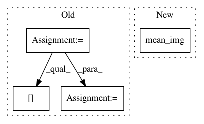

49257721ec65c78965df63152b8933e9baebd4a6,examples/decoding/plot_poldrack_space_net.py,,,#,11
Before Change
////// Fit and predict ////////////////////////////////////////////////////////////////////////////////////////////////////////////////////
from nilearn.decoding import SpaceNetRegressor
penalties = ["smooth-lasso", "tv-l1"]
decoders = {}
for penalty in penalties:
decoder = SpaceNetRegressor(mask=mask_img, penalty=penalty,
eps=1e-1, // prefer large alphas
memory="cache", verbose=2)
decoder.fit(X, y) // fit
decoders[penalty] = decoder
////// Visualization //////////////////////////////////////////////////////////////////////////////////////////////////////////////////////////
import matplotlib.pyplot as plt
from nilearn.plotting import plot_stat_map
from nilearn.image import mean_img
for penalty, decoder in decoders.iteritems():
plot_stat_map(mean_img(decoder.coef_img_), title=penalty,
display_mode="yz", cut_coords=[20, -2])
plt.show()
After Change
decoder.fit(X, y) // fit
////// Visualize TV-L1 weights
plot_stat_map(mean_img(decoder.coef_img_), title=penalty, display_mode="yz",
cut_coords=[20, -2])
plt.show()
In pattern: SUPERPATTERN
Frequency: 4
Non-data size: 4
Instances
Project Name: nilearn/nilearn
Commit Name: 49257721ec65c78965df63152b8933e9baebd4a6
Time: 2015-07-28
Author: elvis.dohmatob@inria.fr
File Name: examples/decoding/plot_poldrack_space_net.py
Class Name:
Method Name:
Project Name: nilearn/nilearn
Commit Name: 36dd7cf04dcd4e71ca4e1a0086713c51759fd42d
Time: 2015-07-28
Author: elvis.dohmatob@inria.fr
File Name: plot_poldrack_space_net.py
Class Name:
Method Name:
Project Name: nilearn/nilearn
Commit Name: 98c59811ac8ac88362b6118794b598ed92682eb7
Time: 2015-07-28
Author: elvis.dohmatob@inria.fr
File Name: examples/decoding/plot_poldrack_space_net.py
Class Name:
Method Name:
Project Name: nilearn/nilearn
Commit Name: 986aacd1c7ed2f7000cc9816057f96d59701e066
Time: 2015-07-28
Author: elvis.dohmatob@inria.fr
File Name: plot_poldrack_space_net.py
Class Name:
Method Name: